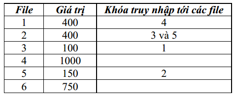

Các hình thức khuyến mãi truyền thống đã phần nào trở thành nhàm chán, không thu hút khách hàng. Hãy tưởng tượng, ở nhà bạn đã có một rổ USB đủ các các loại, vậy mà khi mua một máy tính xách tay cực mốt Macbook trọng lượng 1250g với giá 30 triệu 500 ngàn đồng bạn được nhã nhặn mời nhận khuyến mãi thêm một USB 4GB!
Siêu thị máy tính CMA (Computer Machine for All – Máy tính cho tất cả mọi người) đã đưa ra một phương thức khuyến mãi mới vừa lách được các qui định của luật khuyến mãi, vừa có sức thu hút lớn, đặc biệt là đối với giới trẻ sinh viên.
Nếu bạn mua một máy tính ở CMA giá từ 8 triệu 799 ngàn đồng trở lên, bạn sẽ được cấp một mã khóa P sử dụng một lần vạn năng và một số nguyên dương k. Bạn được quyền truy nhập vào trang WEB CMA.Soft.com của cửa hàng. Trang WEB này chứa n phần mềm, đánh số từ 1 đến n. Mỗi phần mềm được lưu trữ dưới dạng một file ZIP và được bảo vệ bằng một khóa riêng. Khóa này vừa dùng để mở nén file vừa dùng để cài đặt phần mềm và đăng ký bản quyền sử dụng. Khóa thuộc loại sử dụng một lần: sau khi được dùng để mở file và cài đặt, khóa sẽ bị vô hiệu hóa. Trong một vài file ZIP còn chứa file DOC lưu khóa truy nhập file ZIP khác.
Thông tin trên trang WEB cho biết giá của mỗi phần mềm và khóa truy nhập của phần mềm này được giữ ở file ZIP nào. Bạn được quyền mở không quá k file ZIP, cài đặt phần mềm mở được và sử dụng khóa hoặc những khóa lưu trữ ở file này để truy nhập tới các file khác. Bạn không nhất thiết phải sử dụng hết các khóa nhận được. Ban đầu với khóa vạn năng P bạn có thể mở một file ZIP tùy chọn bất kỳ, cài đặt phần mềm đó vào máy của mình và dùng các khóa lưu trữ trong file này để truy nhập tới các file khác. Giá trị máy của bạn sẽ tăng thêm một lượng đúng bằng tổng giá trị phần mềm được cài đặt thêm. Nếu có cách lựa chọn sử dụng khóa đúng đắn, giá trị máy tính của bạn có thể tăng lên gấp đôi hay gấp ba!
Ví dụ, với n = 6, k =3 và thông tin về các file ZIP như sau:

Nếu dùng khóa vạn năng truy nhập vào file 2, bạn có thể cài đặt phần mềm 2, dùng khóa 3 nhận được để truy nhập và cài đặt phần mềm 3, sau đó dùng khóa 1 để truy nhập và cài đặt phần mềm 1. Tổng giá trị phần mềm cài đặt được là 400+100+400 = 900. Nhưng nếu lúc đầu bạn truy nhập vào file 1, cài đặt và truy nhập tiếp đến file 4. Vì file 4 không chứa khóa nào nên bạn chỉ cài được hai phần mềm (dù còn 01 lượt chọn nhưng bạn không được chọn file bắt đầu khác vì khóa vạn năng chỉ sử dụng 1 lần), nhưng tổng giá trị của chúng sẽ là 1400. Có lẽ bạn sẽ chọn phương án sau, phải vậy không? Song đó vẫn chưa phải là cách có lợi nhất!
Yêu cầu: Cho n, k, giá trị của từng phần mềm và khóa kèm theo tới các file khác (nếu có). Khóa truy nhập tới mỗi file được lưu giữ ở không quá một nơi. Hãy xác định tổng giá trị lớn nhất của các phần mềm bạn có thể cài đặt vào máy của mình.
Dữ liệu nhập:
- Dòng đầu tiên chứa hai số nguyên n và k (1 ≤ k ≤ n ≤ 100)
- Dòng thứ i trong n dòng sau chứa hai số nguyên không âm vi và mi (vi ≤ 106), trong đó vi là giá trị phần mềm thứ i, mi là số lượng khóa lưu giữ trong file thứ i. Nếu mi > 0 thì sau đó là mi số nguyên dương khác nhau từng đôi một, mỗi số có giá trị không vượt quá n – là các chỉ số của các file có khóa truy nhập được lưu trong file thứ i.
Dữ liệu xuất:
- Là một số nguyên – tổng giá trị lớn nhất của các phần mềm có thể cài đặt.